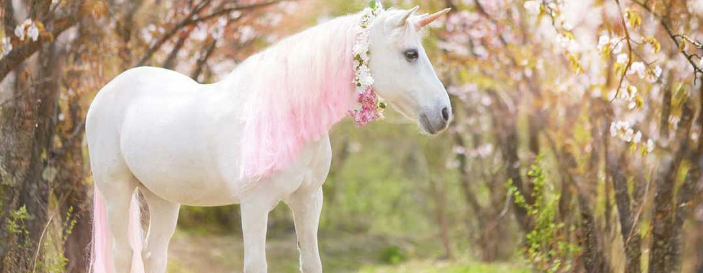
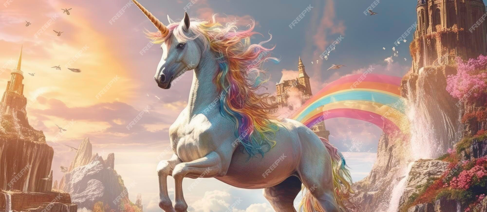

Encyclopédie des Licornes
A quoi ressemble la licorne ?
Pour commencer, la licorne est une créature légendaire qui aurait une longue corne torsadée sur le front et dont le pelage serait d'un blanc immaculé. Si l'on associe maintenant instinctivement la licorne à un cheval, cela n'a pas toujours été le cas. En effet, la licorne a parfois été décrite comme plus proche d'une chèvre ou encore d'un rhinocéros, partageant ainsi certaines caractéristiques physiques avec ces deux êtres : des sabots en cloche et un pelage touffu pour la chèvre ainsi que l'incontournable corne du rhinocéros. Enfin, dans certains récits d'explorateurs anciens, la licorne a aussi été décrite comme une espèce d'antilope.
Les licornes étaient connues pour leur gentillesse et leur sagesse. Elles aimaient aider les animaux perdus et les enfants égarés. Leur corne magique avait le pouvoir de guérir les blessures et de purifier l'eau des rivières.
Où vivent les licornes
Les licornes vivent dans des lieux magiques et secrets, souvent cachés au cœur de forêts enchantées. Ces forêts sont remplies d'arbres anciens et majestueux, de rivières étincelantes, et de fleurs aux couleurs vives et lumineuses. Les licornes choisissent des clairières paisibles et isolées où elles peuvent être à l'abri des regards des humains et des autres créatures qui pourraient leur vouloir du mal.
Parfois, les licornes peuvent aussi vivre près de montagnes mystérieuses ou de lacs enchanteurs, des endroits où la magie est particulièrement puissante. Ces lieux sont difficiles à trouver et souvent protégés par des sorts anciens qui empêchent les intrus de les découvrir.
Le conte de l'ermite cornu ou "Ekashringa"
Il existe un conte indien qui appartient à la littérature sanskrite, issue des Jātaka, des écrits qui racontent les vies antérieures de Bouddha. Celui-ci met en scène un ermite solitaire qui porte le nom de Ekashringa, qui signifie "corne unique". La légende raconte que ce personnage méditait et vivait dans la fôret, parmi les animaux qui la peuplent. Un jour, alors qu'il buvait de l'eau à la même source qu'une antilope divine, il donna naissance à un enfant doté d'une corne unique faite d'ivoire sur la tête. Cet enfant aurait également des pouvoirs surnaturels.
